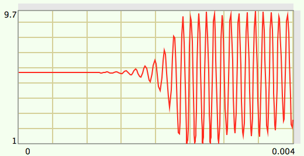
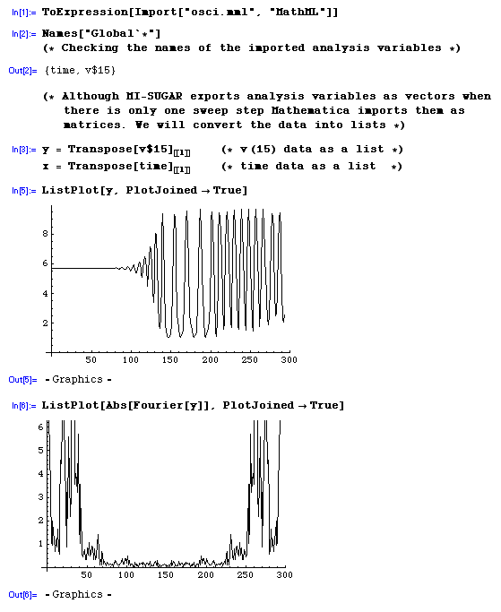

Exporting the Results
Sometimes it is desirable to perform some sort of postprocessing
on the analysis results. MI-SUGAR has no such capabilities (yet)
but it can export the analysis results into files that can be read
by Mathematica®, Matlab® and other applications.
To export the analysis results into one of the following formats
use the export commands in the Circuit menu.
For each analysis type that was run one file will be created.
File formats:
-
MathML: The Mathematical Markup Language is an XML-based format
supported by Mathematica. A description of the MathML can
be found at the web site of the
World Wide Web Consortium.
The names of the analysis variables will be modified - to avoid
syntax errors - according to the following rules:
Opening parantheses and pound characters (#) are replaced with
dollar characters ($) and closing parantheses are discarded.
Example: V(4) becomes V$4, and vgs#branch
becomes vgs$branch.
The variable types will be vectors for variables without sweep
steppings, and matrices for variables with sweep stepping, where
each row of the matrix contains the values corresponding to one
step of the sweep variable.
To import a MathML file into Mathematica type
Import["<filename>", "MathML"]
followed by
ToExpression[%]
-
Matlab: These files contain Matlab commands. The analysis results
are stored in the form of Matlab vectors and matrices.
Exporting to Matlab is similar to exporting to MathML. Again, the data is put
into vectors and matrices, depending on the existence of a sweep variable.
However, the variable renaming scheme is a bit different for Matlab:
Pound signs (#) and opening parentheses are converted to
underscores (_) instead of dollars ($). The data is exported to ".m"
files which can be imported by simply entering the name of the file
from within Matlab.
-
Tabular Text: In this format data is structured in columns, one for
each output variable. The number of rows is the number of values
in the variables. Each column has the same number of rows.
The file starts with a line which lists the names of the variables
and there is an empty line before each sweep set.
Example session with Mathematica:
The analysis results for the circuit "RC Oscillator.cir"
(available from the Sample Circuits directory in the distribution package
or on the Web site) is exported in MathML format to the file 'osci.mml'.
In Mathematica we import it and turn the data for each variable into lists.
We can now easily plot the data and its Fourier transform.

RC Oscillator analysis plot in MI-SUGAR

Post-processing the analysis data in Mathematica
Note: The exporting features requires a valid license key. The exported
files were verified with Matlab 6.5 (Release 13) and Mathematica 4.2 on
Mac OS X.
Matlab is a registered trademark of The MathWorks, Incorporated.
Mathematica is a registered trademark of Wolfram Research, Incorporated.
|